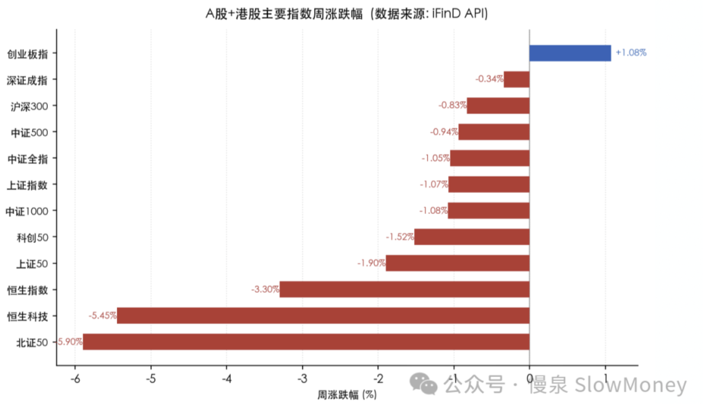
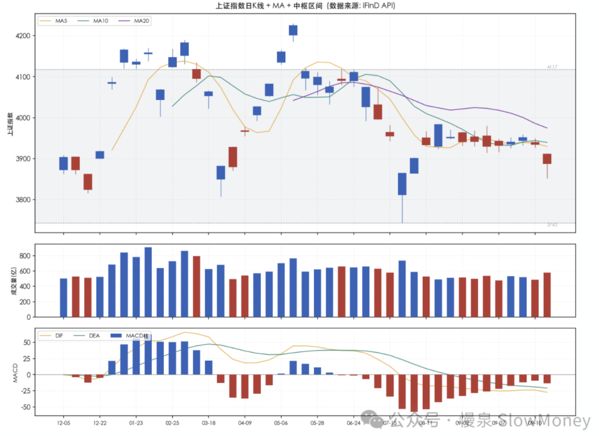
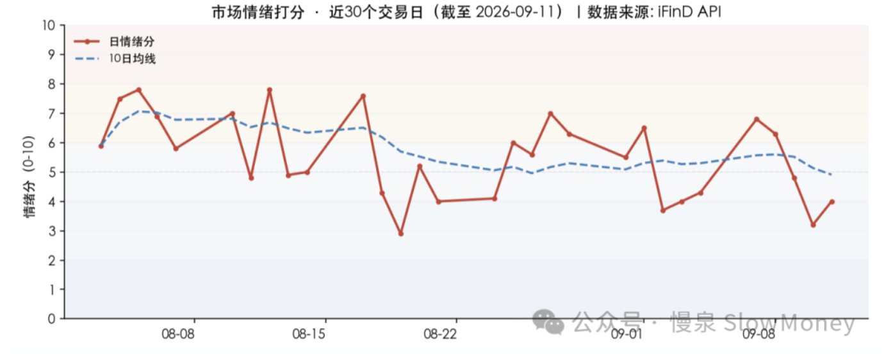

投资备忘20260913-赢者（被）通吃
2026-09-07 — 2026-09-13 · W37 · 周度备忘（补档）
市场很无聊，如果不是美股还有通胀数据造成一点波动，市场估计就是心电图的一周：区间极其狭窄（3930-3990）、成交大幅萎缩到 1.8 万亿附近的水平，市场提前进入假期模式。无聊就读书，最近读唐浩明的《曾国藩》，里面有一段讲到曾国荃攻陷南京后的一系列事件，发现在存在双层游戏规则的情况下，下层游戏的赢者战战兢兢、如履薄冰——赢者通吃之后就是被集体啄食的过程。
赢者（被）通吃
前情：围攻金陵两年，曾国藩为了让九弟摘桃子动用了能动用的几乎所有资源，最后如愿以偿。但留下的隐患包括：太平天国太子逃走、士兵烧杀抢掠、金银运回湖南。
谁是敌人，谁是朋友。
- 上面不满（游戏规则 A）：朝廷害怕如此庞大的军队如何控制，而且本来打算攻陷天王府收点钱，兄弟俩没给；僧格林沁在皖北山东带兵一直跟曾国藩不对付；恭王赋闲中，唯一的盟友暂时说不上话；
- 同僚嫉妒（游戏规则 B）：沈葆桢（江西巡抚）抓住逃走的太子，报复曾家兄弟；左宗棠（浙江）看不上曾家兄弟为首攻金陵所做的安排；李鸿章逐渐成长，表面仍然可依赖；
- 内部混乱（史料）：烧杀抢掠惯了，南京各王府被军队洗劫；各个军营利益分配不均；货船运送金银到湖南被发现暴露。
谎报军情、庞大军事力量和巨额财产来源不明基本就可以让湘军完蛋。通过僧格林沁换防形成对南京的包围、同时派调查组到南京等形式搞事情，但迫于当时形势，完成裁军、搞老九，来敲打曾国藩。
被吃：
- 主动裁军：10 万湘军留下 3 万，其中两万还是水军；
- 弃曾国荃：兄弟俩秦淮河上分别，最能打的兄弟心灰意冷。
所以当这个游戏存在两个游戏规则的时候，你以为的"人上人"其实是"工具人"。当然即使在这种情况下，冷静思考、功成身退确实让人叹为观止。
当游戏存在两个游戏规则的时候，你以为的"人上人"其实是"工具人"。
本周市场
中证全指（市值加权）周跌 -1.05%，全 A 中位数（等权）周跌 -2.86%，两者背离约 1.81 个百分点。这反映本周呈典型的"权重护盘、中小盘杀跌"格局——银行、电力、公用事业等大市值红利股相对抗跌，而小盘题材股、微盘股遭遇系统性抛售（微盘股 -3.06%、北证 50 -5.90%）。指数层面（尤其上证 -1.07%）显著"失真"，掩盖了个股层面的普跌。
本周风格呈三重分化——① 成长 > 价值（各规模档内成长均强于价值，如大盘成长 -0.23% vs 大盘价值 -1.18%）；② 大盘 > 小盘（大盘成长 -0.23% > 中盘成长 -1.08% > 小盘成长 -1.81%）；③ 红利抗跌（中证红利 +0.00%、红利低波 -0.37% 最抗跌，微盘股 -3.06% 领跌）。这是典型的"AI 成长占优 + 避险红利抗跌 + 微盘被抽血"的防御性分化格局。
AI 算力硬件是全周唯一主线：通信（+6.87%）领涨申万一级，概念层面光模块/光通信/铜缆/CPO/PCB 全线大涨，同花顺二级"元件"单周 +14.44%。催化密集：村田拟 2029 年停产 9 系 MLCC（国产替代窗口）、深圳光博会（保偏光纤）、电子布-CCL 涨价链条、弘信电子算力订单逼近百亿、长鑫存储利润率反超三星。全市场周成交额 TOP10 中 8 只为 AI 算力/半导体/光模块标的，资金高度抱团。
"油涨铜跌"的结构性背离：WTI 原油周涨 +9.37%（中东冲突），但 A 股有色金属（-2.89%）、贵金属领跌——油价上行推升再通胀预期、压制工业金属的宏观需求逻辑，同时精炼铜关税"暂未落槌"预期反复。油强铜弱凸显"能源通胀 vs 工业需求走弱"的分歧。

市场展望
走势模式：调整被拉长。中期市场调整的周期又被拉长了，结构行情没那么容易到。按照最近几年创新高后的调整时间和力度基本上在 2 个月以内、幅度在 5-10% 之间，但是现在明显已经超过这个力度，这样可参考的时间只有 2021 年 2 月份后的调整——持续了 5 个月以上，结构性市场伴随着指数的震荡。
短期的市场结构：从 9 月份以来的窄幅震荡 3920-4000 向下突破，回到 8 月份以后的震荡中枢 3850-4000 点，这意味着向下的空间被打开，并且可能重新回到 7 月份的震荡区间。

市场情绪。本周情绪整体处于"中性偏冷"区间，周五收于 4.0（中性）。结构上"市场广度 2 分、风险偏好 0.2 分"处冰点区，反映赚钱效应高度集中于 AI 算力等极少数标的，绝大多数个股阴跌；量能 6.5 分是唯一亮点，两市成交额维持 1.65-1.97 万亿，资金仍在场内但高度抱团。近一月 5.2 分显示中期情绪仍属中性，未见恐慌性出清。

海外关注：今年两次加息被定价，当前关注点反而不是美债而是美元——关系到美元定价资源和资产，包括金属、油气和比特币。欧洲率先加息、下周美国、日本相继落地，对资产定价产生较大影响并形成未来的定价基准；中期选举和中美俄见面，意味着中东的局势改观前景渺茫，筹码都是 raise 上去的，没有离开牌桌的理由。这种情况下，美联储和川普都扮演削弱美元信誉的角色。
组合备忘
Beta 组合表现跑输市场（市场是指中证全 A），Macro 基本持平。本周市场调整组合同样下跌，组合以调整结构为主、仓位控制在目标仓位以内。组合仓位先降后升、周度基本持平，主要增加的是 HALO 资产：Beta 策略仓位 89%，主要增加资源类和 HALO 资产、减仓红利；Macro 策略仓位 80%（其中转债 30%）。
组合与市场的负超额来自配置结构：
- 超配周期资源与地产链；
- 低配 AI 算力硬件（本周唯一主线，光模块/PCB/元件领涨）；
- 资源股在周五出现大幅回调，上半周的超额收益被抵消。
| 类别 | 仓位 |
|---|---|
| Beta 策略（增加资源类和 HALO 资产、减仓红利） | 89% |
| Macro 策略权益仓位（含转债 30%） | 80% |
Beta 跑输市场 · Macro 基本持平 · 周度涨幅不再公开播报
操作和思考：本周主要是调仓，整体仓位略微下降。仓位上本来的交易计划是降低仓位，这在前半周执行较好，周五的波动选择加回部分持仓。
结构上从红利资产向 HALO 资产转移：一方面判断当前是宏观交易的窗口，海外剧烈波动的情况下资源品有形成内外共振的板块，联储和地缘都在威胁美元地位，进而影响资产定价；另一方面 A 股市场迫切需要寻找科技硬件之后的替代资产，在创新药、低位资产和软件相继回落之后，接棒并且能够形成共振的大概率是资源品。
下一步：要充分预估困难，特别是在节前成交量较低的情况下很容易出现长下影或者长上影，甚至中阴线的可能性。组合仓位需要继续控制，短期内的核心持仓保持 HALO 资产、低位资产和 AI 端侧应用资产。仓位上基本持平或下降，组合结构上选择在节前稳定，少动多看。
- HALO 资产：宏观交易窗口 + 内外共振的主攻方向；
- 低位资产：资金再平衡的承接方向；
- AI 端侧应用资产：科技硬件之后的应用扩散。
上期钩子的答案：① 坟头蹦迪超额段②退出信号——未退出：红利继续抗跌（中证红利 +0.00%、红利低波 -0.37%），但组合主动减红利换 HALO，赌的是避险逻辑向再平衡逻辑切换；② 3764-3990 区间与"假突破"思路——验证：3920-4000 窄幅震荡向下突破，回到 3850-4000 中枢，向下空间打开；③ HALO 全球定价推演——落地执行：增配资源类 HALO，宏观交易窗口（欧洲加息、美元信誉削弱）判断成为主逻辑；④ Macro 80→50 与红利聚焦——未执行：Macro 仍 80%，红利减仓但聚焦名单未公布。新钩子：① 调整拉长（参照 2021/2 后 5 个月+）与 3850-4000 中枢下沿的方向选择；② AI 算力硬件独苗主线的持续性与节前缩量风险（长上影/中阴线预警）；③ 全球加息潮下美元定价资产（金属/油气/比特币）的定价基准重构；④ 资源品内外共振接棒科技硬件的验证。对账窗口：2026 年 10 月上旬。